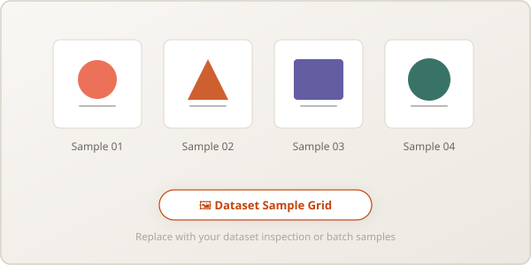

Bài tập lớn A2 (Chiếm 30% coursework) In progress...
Xây dựng pipeline thị giác máy tính chạy được (so sánh ít nhất 2 phương pháp/biến thể) kết hợp đọc, phân tích
và phản biện chuyên sâu một bài báo khoa học liên quan.
🎯
Mốc A2.1: Khóa Đề tài & Paper
Hạn: 02/11/2026 (W9) · Khóa chủ đề CV, citation paper
(CVPR/ICCV/ECCV/...), mô tả tập dữ liệu & metric, kế hoạch pipeline (chưa cần kết quả cuối).
🛠
Mốc A2.2: Pipeline & Paper Report
Hạn: 16/11/2026 (W11) · Pipeline chạy được, so sánh ≥ 2 biến
thể, phân tích paper đầy đủ (phương pháp, thí nghiệm, hạn chế, đối chiếu), số liệu và thảo luận.
Hình 2.1: Sơ đồ kiến trúc tổng quan đề xuất từ bài báo khoa học được lựa chọn.
02
A2.2: Thiết kế & Xây dựng Pipeline thực tế
Các thành phần cấu thành pipeline hoàn chỉnh từ dữ liệu thô đến kết quả suy luận:
Module 1
Data & Preprocessing
Quy trình nạp dữ liệu theo batch, chuyển đổi color space, resize tỉ lệ khung hình (letterboxing), và gán
nhãn bounding box / mask ground-truth.
Module 2
Backbone & Head
Mạng trích xuất đặc trưng đa quy mô (Feature Pyramid Network - FPN) kết hợp Prediction Head tính toán loss
phân loại và hồi quy tọa độ.
Module 3
Post-processing & Eval
Lọc hộp trùng lặp bằng Non-Maximum Suppression (NMS), tính toán chỉ số mAP@[.5:.95] hoặc mIoU tiêu chuẩn.

Hình 2.2: Trực quan hóa kết quả dự đoán của pipeline trên các ảnh mẫu kiểm thử.
03
A2.2: So sánh Pipeline & Phân tích Paper
3.1. So sánh các biến thể trong Pipeline của nhóm
Quy định bắt buộc (Specs Mục 4.1): Triển khai ít nhất một pipeline chạy được và so sánh ít nhất hai phương pháp
hoặc hai biến thể (kiến trúc, backbone, pretrained vs scratch, hàm loss, v.v.):
Biến thể Pipeline
Kiến trúc / Backbone
Cơ chế Huấn luyện & Loss
Tham số
Metric chính (mAP / mIoU / FID)
Tốc độ suy luận (FPS)
Biến thể 1 (Phương pháp cơ sở)
[e.g. YOLO / Faster R-CNN / DeepLabv3]
[Loss chuẩn]
[Sẽ cập nhật]
[Sẽ cập nhật]
[Sẽ cập nhật]
Biến thể 2 (Phương pháp đối chiếu)
[e.g. DETR / Mask R-CNN / SegFormer]
[Loss cải tiến / Backbone khác]
[Sẽ cập nhật]
[Sẽ cập nhật]
[Sẽ cập nhật]
3.2. Đối chiếu thực nghiệm với bài báo khoa học gốc
Bảng so sánh kết quả thực nghiệm đạt được bởi nhóm so với số liệu công bố trong bài báo gốc:
Phương pháp
Backbone
Metric (Công bố trong Paper gốc)
Metric (Nhóm tự tái hiện)
FPS (Inference)
Baseline từ bài báo
[Sẽ cập nhật]
[Sẽ cập nhật]
—
—
Phương pháp đề xuất chính
[Sẽ cập nhật]
[Sẽ cập nhật]
[Sẽ cập nhật]
[Sẽ cập nhật]
Cải tiến của nhóm (Nếu có)
[Sẽ cập nhật]
—
[Sẽ cập nhật]
[Sẽ cập nhật]
3.3. Báo cáo phân tích phê phán bài báo (Paper Critical Analysis)
Phân tích chi tiết 4 nội dung bắt buộc theo yêu cầu đặc tả (Specs Mục 4.2):
Tóm tắt phương pháp: Ý tưởng cốt lõi, kiến trúc mạng, hàm mất mát (loss function), và các
giả thiết tiên nghiệm của tác giả (không chép lại abstract).
Tóm tắt thí nghiệm của paper: Bộ dữ liệu kiểm chứng, các độ đo (metrics) được áp dụng, và
kết luận rút ra từ bài báo.
Hạn chế của bài báo (Limitations): Rào cản về dữ liệu, chi phí tính toán phần cứng, các
trường hợp lỗi (failure cases), và giả thiết nào không còn đúng khi áp dụng trên tập dữ liệu của nhóm.
Đối chiếu với pipeline của nhóm: Nhóm đã tái hiện được những gì, điểm khác biệt trong quá
trình cài đặt thực tế, và bài học rút ra cho pipeline.